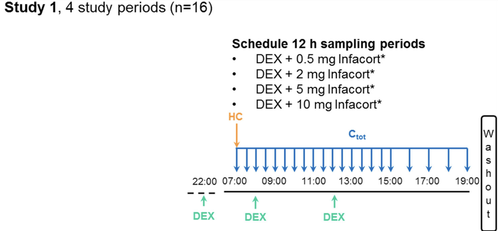
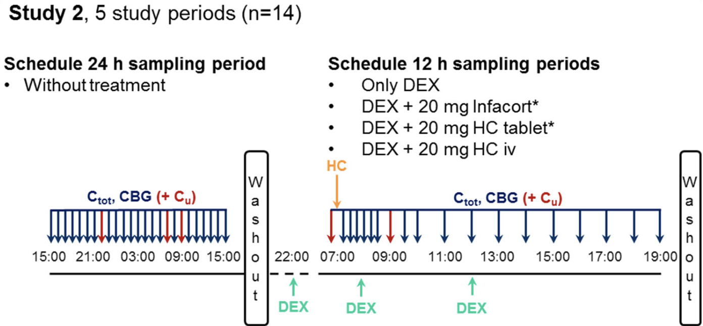
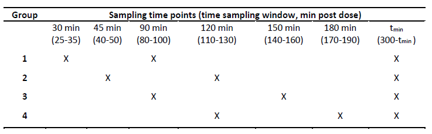

Clinical Trials
Reported by 2015_Whitaker
- [2015_Whitaker]
- EudraCT number: 2013-000260-28
- NCT02777268
- Phase 1 Trial
- Healthy male volunteers
- 18-60 years
- no clinically significant sensitivity to hydrocortisone
- no clinically significant sensitivity to dexamethasone (DEX)
- no infection
- performed at Simbec Research Ltd (Merthyr Tydfil, UK)
- Formulation: Infacort® (Diurnal Ltd)
- administration of HC (08:00 and 13:00)
- after which received standardised meals
- four study periods
- n=16
- 2 volunteers were excluded
- insufficient suppression of the HPA axis
- median values with range
- \(age\) 43.5 (21.0-59.0) years
- \(body weight\) 81.6 (64.7-96.0) kg
- \(height\) 1.77 (1.64-1.95) m
- 2 volunteers were excluded
- DEX
- 1 mg
- in each study period
- to suppress the endogenous cortisol synthesis
- Single morning oral (po) doses of Infacort®
- 0.5 mg
- 2 mg
- 5 mg
- 10 mg
- Washout period
- at least 1 week between periods
- Measurements
- Total plasma cortisol concentrations (\(C_{tot}\))
- every 0.5 h between [0 h, 8 h]
- every 1.0 h between [9 h, 12 h]
- LC-MS/MS
- Applied Biosystems MDS Sciex API 365 triple quadrupole atmospheric pressure ionisation mass spectrometer
- LLOQ 1.38 nmol/L
- intra-assay variability <15% at LLOQ and <10% for 22–552 nmol/L
- Total plasma cortisol concentrations (\(C_{tot}\))
- n=16

Summary of study design of the clinical trial. Figure was adopted from 2018_Melin.
Reported by 2016_Debono
- [2016_Debono]
- EudraCT number: 2013-000259-42
- NCT01960530
- Phase 1 Trial
- included evaluation of the endogenous cortisol synthesis/concentrations in absence of DEX
- healthy male volunteers
- (18-60 years)
- no clinically significant sensitivity to hydrocortisone
- no clinically significant sensitivity to dexamethasone (DEX)
- no infection
- performed at Simbec Research Ltd (Merthyr Tydfil, UK)
- Formulation
- Infacort® (Diurnal Ltd)
- HC tablet (Auden Mackenzie Ltd, Ruislip, UK)
- hydrocortisone succinate (iv)
- Administration of HC (08:00 and 13:00)
- after which received standardised meals
- five study periods
- n=14
- no signs of insufficient suppression of the HPA axis
- median values with range
- \(age\) 28.5 (22.0-60.0) years
- $body weight $ 82.9 (63.6-102.7) kg
- \(height\) 1.83 (1.68-1.96) m
- 1 period without + 4 with DEX
- single morning oral (po) or iv doses
- 20 mg
- DEX
- 1 mg
- in each study period
- to suppress the endogenous cortisol synthesis
- washout period
- at least 1 week between last 4 periods
- Measurements
- Total plasma cortisol concentrations (\(C_{tot}\))
- every 1.00 h between [0 h, 24 h] in absence of DEX (15:00-15:00)
- every 0.25 h between [0 h, 3 h]
- every 1.00 h between [4 h, 6 h]
- every 2.00 h between [6 h, 12 h]
- LC-MS/MS
- Applied Biosystems MDS Sciex API 365 triple quadrupole atmospheric pressure ionisation mass spectrometer
- LLOQ of 1.38 nmol/L
- intra-assay variability 9.6% between [4.14 and 553] nmol/L
- inter-assay variability 3.7% between [4.14 and 553] nmol/L
- Accuracy <5% between [0.5, 300] nmol/L
- CBG [2003_Lewis]
- ELISA (Biovendor, Czech republic, Brno)
- LLOQ of 3.13 ng/mL
- intra-assay variability < 3.0%
- inter-assay variability < 8.0%
- ELISA (Biovendor, Czech republic, Brno)
- unbound cortisol concentrations (\(C_u\))
- 22:00 in absence of DEX
- 07:00 in absence of DEX
- 09:00 in absence of DEX
- pre dose
- 2.0 h post dose
- LC/MS-MS
- LLOQ of 0.80 nmol/L
- intra-assay variability <8.0%
- inter-assay variability <9.5%
- Accuracy <10.4% for concentrations between [2.7, 72.0] nmol/L [2012_Jones]
- Total plasma cortisol concentrations (\(C_{tot}\))
- n=14

Summey of study design of the clinical trial. Figure was adopted from 2018_Melin.
Reported by Charite
- [2016_Debono]
- EudraCT number: 2014-002265-30
- Phase 3 Trial
- Institute of Experimental Paediatric Endocrinology at Charite-Universitätsmedizin Berlin
- Population Summary
| Cohort | Age Range | Sample Size | Description |
|---|---|---|---|
| Cohort 3 | birth-28 days | n=6 | neonates |
| Cohort 2 | 28 days-2 years | n=6 | infants |
| Cohort 1 | 2-6 years | n=12 | young children |
- Dose: 1-4 mg
- fasted 2h before and 1h (or 30 min for <1 y.o.) after dose
- Formulation: opened Infacort® capsule
- granules
- with a spoon onto the tongue of the child
- washed down with fluid (milk, juice, water).
- Measurements from intravenous cannula
- Total plasma cortisol concentrations (\(C_{tot}\))
- performed at Simbec Research Ltd (Merthyr Tydfil, UK)
- CBG
- performed at Simbec Research Ltd (Merthyr Tydfil, UK)
- albumin
- Total plasma cortisol concentrations (\(C_{tot}\))

Study design of the clinical trial. Figure was adopted from PhD thesis of Johanna Melin.
Studies by Charmandari
- [2001b_Charmandari]
- [2001c_Charmandari]
- n=42
- classical 21-hydroxylase deficiency
- age: 7-17 years
- adequate HPA axis suppression
- ACTH concentrations at 08:00 <71 pg/mL
- 17-OHP concentrations <20 nmol/L
- Exclusion criteria:
- inadequate HPA axis suppression
- ACTH concentrations at 08:00 <71 pg/mL
- 17-OHP concentrations <20 nmol/L
- Patients with signs of precocious puberty
- other signs of endocrine disorder
- insufficient dosing history
- inadequate HPA axis suppression
- Standard treatment of fludrocortisone
- Morning dose
- median 123.8 μg/\(m^2\)
- range 54.0-160.0
- po administration
- Hydrocortone, Merck Sharp & Dohme Ltd
- n=17
- 08:00
- 15:00
- 22:00
- n=13
- 09:00
- 21:00
- single iv bolus administration
- Solu-Cortef, Pharmacia & Upjohn
- n=16
- 15 mg/\(m^2\)
- Measurements
- Total plasma cortisol concentrations (\(C_{tot}\))
- [2001b_Charmandari]
- {iv} every 10 min up to 6 h post dose
- {po} every 20 min up to 24 h
- solid phase radioimmune assay
- Coat-A-Count, DPC, Los Angeles, CA, USA.
- LLOQ of 21-28 nmol/L
- inter-assay variability
- 6.3% for 138 nmol
- 4.5% for 276 nmol
- 17-OHP
- [2001c_Charmandari]
- {po} every 20 min up to 24 h
- solid phase radioimmune assay
- Coat-A-Count, DPC, Los Angeles, CA, USA
- LLOQ of 0.3 nmol/L
- inter-assay variability
- 11% for 1.06 nmol
- 8.5% for 18.5 nmol
- Total plasma cortisol concentrations (\(C_{tot}\))